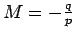
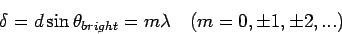
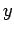

Next: About this
document ...
Physics 232. Heat, Sound, and
Light
Equations from last 3rd of quarter.
(See previous equation reviews for comprehensive portion.)
- 35.4
- Index of refraction:

- 35.7
- Wavelength in medium with index of refraction n:

- 35.8
- Snell's law:

- 36.1
- Magnification:

- 36.2
- Magnification for mirrors: 
- 36.5
- Radius of curvature:

- 36.6
- Mirror equation (spherical mirrors):

- Table 36.1
- Sign conventions for spherical mirrors
- 36.8
- Spherical refracting surfaces:

- Table 36.2
- Sign conventions for refracting surfaces
- 36.15*
- Lens-makers equation:

- 36.16
- Thin lens equation:
- 36.17
- Magnification for Thin lenses:
- Table 36.3
- Sign conventions for thin lenses
- 36.17
- Two thin lenses in contact have net focal length:

- 37.1
- Path length difference, double slit with slit separation d:

- 37.2
- Constructive interference by double slit:

- 37.3
- Destructive interference by double slit:
- 37.4
- Double slit pattern: the position of P on wall is  above the central maximum, where
- 37.15
- Constructive interference from thin film reflection:
2nt = (m+ 1/2) (lambda)
Next: About this
document ...
Jason Pinkney
2005-05-12